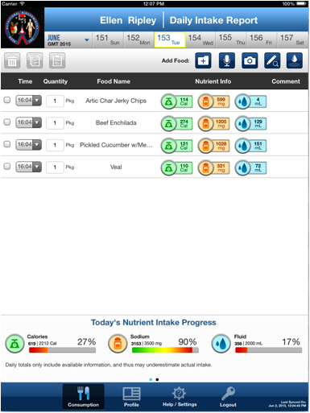

Food items recorded in the ISS FIT app can be viewed from the Summary page:

The Summary page contains a list of recorded food items for the selected day. You'll be able to view the food consumed, time of consumption, quantity consumed, as well as some nutritional information about the food item. You can use a swipe command on the "Nutrient Info" column to view additional nutritional data about a specific food item.
Navigation is done using the calendar controls at the top of the screen. Click on the month button (with a down arrow) to bring up the calendar control where you can select the day to view consumption details for: